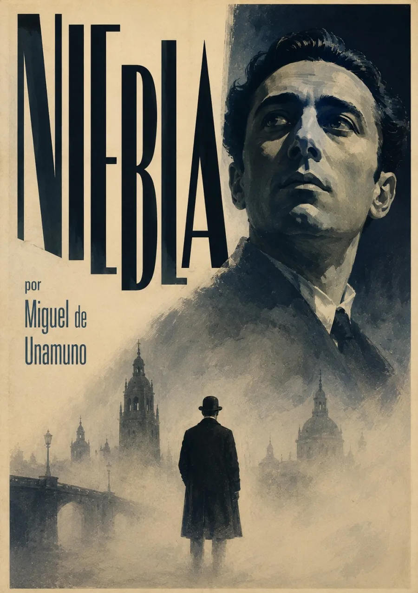

Audiolibros · Cuarta Ola
Miguel de Unamuno · Nivola · 1914
Niebla
¿Quién decide la vida que vivimos?
Un hombre busca un rumbo entre el amor y la duda.
Su historia empieza a discutir con quien la escribe.
Una voz que empieza a dudar de su propia historia.
Grabación próximamente
Volumen

La vida puesta en duda
Augusto Pérez sale de casa sin saber qué camino tomar. Su encuentro con Eugenia parece ofrecerle una dirección, pero el amor multiplica las preguntas que ya lo acompañaban. Conversaciones, proyectos y vacilaciones convierten lo cotidiano en una indagación sobre el deseo y la identidad.
La duda alcanza incluso a quien cuenta la historia.
Unamuno llama «nivola» a esta obra y desestabiliza la frontera entre autor y personaje. El prólogo de Víctor Goti y las intervenciones del propio escritor hacen que la autoridad del relato nunca resulte del todo segura. El humor y la angustia conviven en una discusión sobre la libertad, la existencia y el sentido de vivir.
En la escucha, los diálogos permiten seguir cómo cada interlocutor modifica las certezas de Augusto. Conviene atender también a sus soliloquios: el pensamiento avanza, se contradice y vuelve sobre sus propias palabras.
Publicado en 1914. Texto e índice consultados en Project Gutenberg · Niebla (Nivola). Ilustración interpretativa.
La lectura
Grabaciones próximamente. Prólogo, post-prólogo, treinta y tres capítulos y epílogo, siguiendo la estructura del texto.
Valoración

Excelente